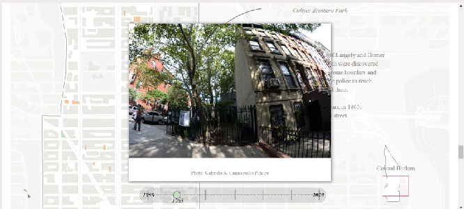
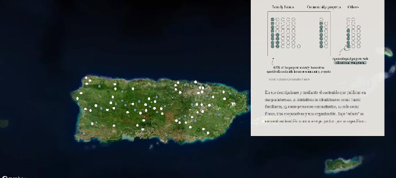
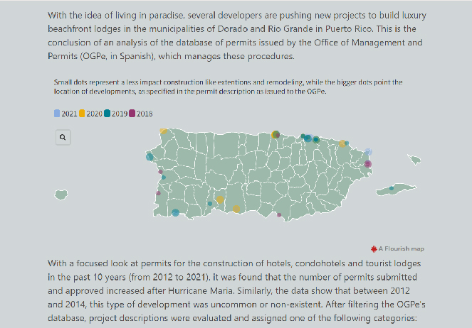
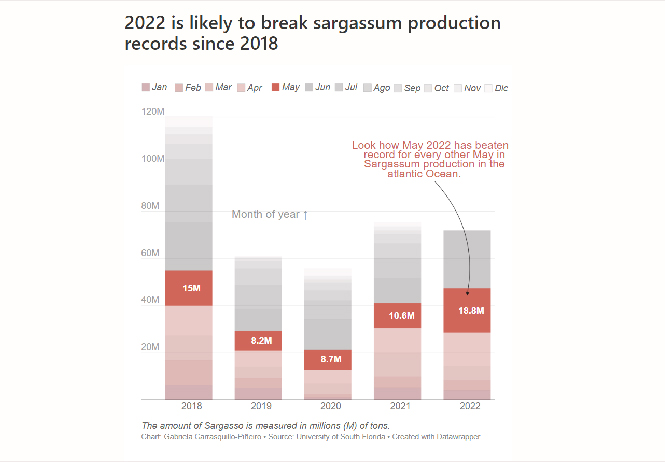
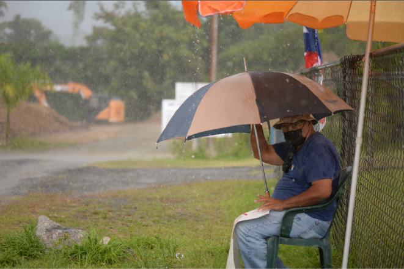
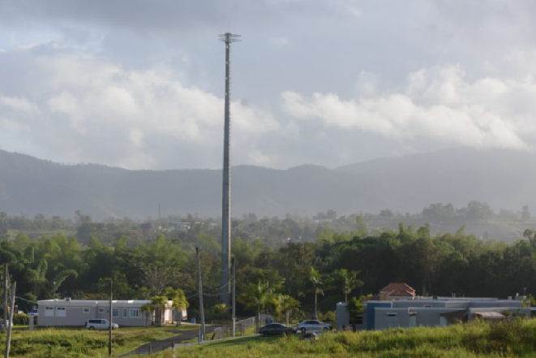
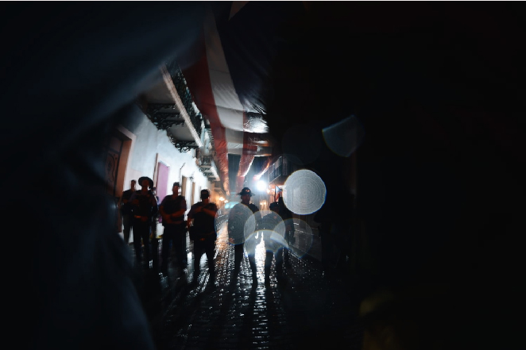

Hello, my name is Gabriela Carrasquillo-Piñeiro, a journalist that loves storytelling and small data stories.
I work on data visualizations (static and dynamic), maping, photojournalism, data analysis and investigative reports.
LinkedIn • Github • Twitter • Email: gabriela.carrasquillo4@upr.edu 🌺
Data

The lots that keep being harvested across Central Harlem
Illustrator • Datawrapper • ai to HTML • Scrollama • Reporting • Photos • HTML/ CSS • geojson.io

The return to the countryside in the face of crisis
Illustrator • Mapbox • ArcGISPro • ai to HTML • Reporting • HTML/ CSS

The largest new hotel developments in Puerto Rico are beachfronts established on the north coast
Python • Flourish • Illustrator • ai to HTML

2022 is on track to break sargassum production records in the Atlantic Ocean
Datawrapper • Flourish
Reporting

Community of Las Piedras manages to stop the installation of a telecommunications tower
Reporting • Photojournalism

When it Comes to Telecom Tower Construction, Communities are ignored
Investigative reporting • Photojournalism • Flourish
“We scream because we exist, and we will not be silent again”
Reporting • Photojournalism
Photojournalism

Protests at La Fortaleza after earthquakes in southern Puerto Rico, 2019